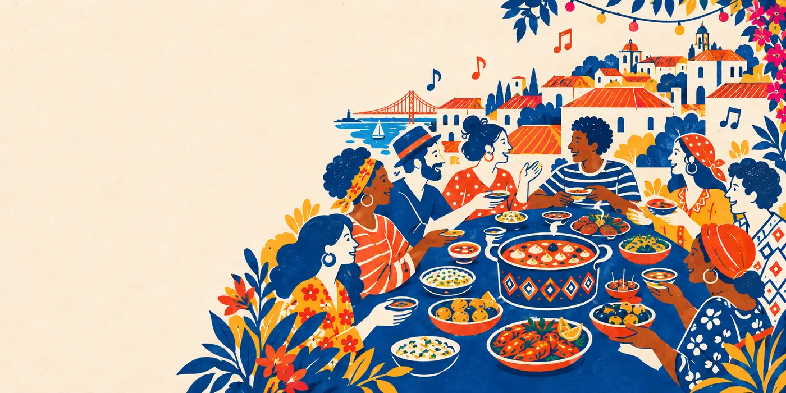
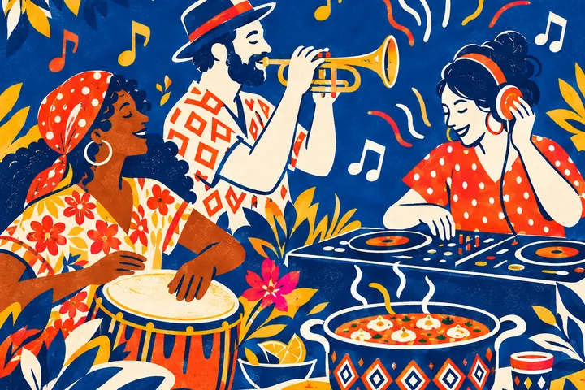
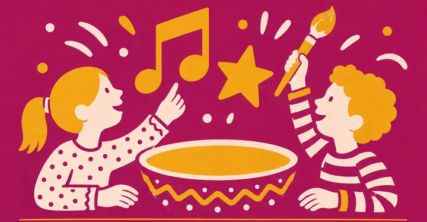
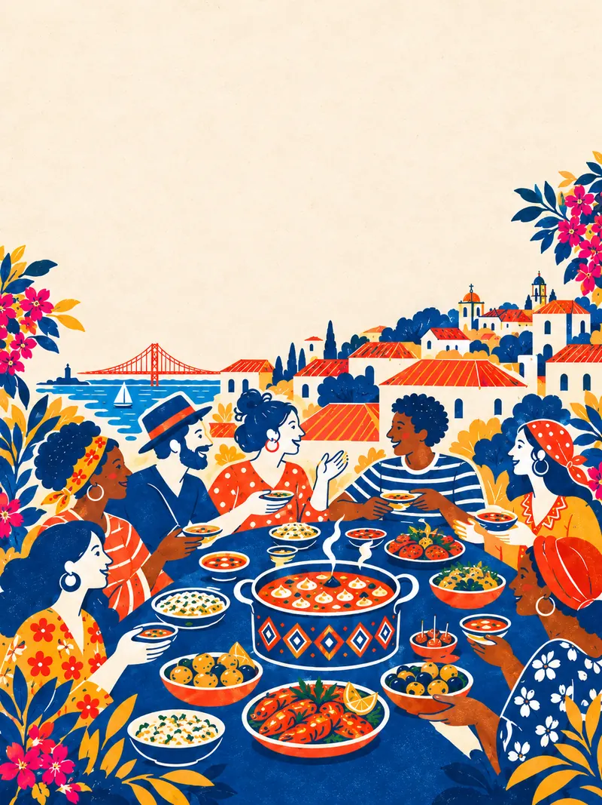

Flavours of the world
Food projects from different countries bring their recipes, their stories and their own way of welcoming people to the table.
17 Oct 2026 · Lisbon
A day to discover flavours from different countries, listen to music, make things, dance and meet the people who make up Lisbon. Voz dos Sabores brings together food projects, artists and communities in a free-entry festival.

Food tells stories of places, families and journeys. At Voz dos Sabores, those stories meet music, art and people from different communities. We want to create an open space where it's easy to try something new, start a conversation and feel a little closer to Lisbon.
Food is where we meet. Community is what we want to build.
This was the first edition of Voz dos Sabores, on 17 October 2026 at Voz do Operário.
Food projects from different countries bring their recipes, their stories and their own way of welcoming people to the table.

Live music and DJs keep the festival going all day. The full programme will be announced on our channels.

An art space invites young people and adults to try things out, make something and become part of the festival.

We're preparing activities for children. Follow our news for the details.
We're bringing together 16 food projects connected to different countries. Behind every stall are people, recipes and stories worth discovering. As participants are announced, you'll find them here and on our Instagram.
Meet the projects on InstagramBetween food, music and activities, we want everyone to find their place at the festival.
The programme is still being updated. Follow us on Instagram for the latest news.
The festival takes place at Voz do Operário in Lisbon. Save the address and come spend the day with us.
Food projects, artists, associations, institutions and brands can help us give more room to the cultures that are part of Lisbon. If you have an idea for working together or want to know more about the project, write to us.
Contact the organisersThis is the first edition of Voz dos Sabores. We hope the connections and partnerships that start here carry on into future editions.
We're working on the possibility of holding up to six editions in 2027. Dates and formats will be announced once they're confirmed.

On Saturday, 17 October 2026, from 12:00 to 22:30.
At Voz do Operário, Rua da Voz do Operário 13, 1100-621 Lisboa. The festival entrance is on Tv. de São Vicente 7.
No. Entry to the festival is free.
Yes, we're preparing activities for the little ones. Follow our news for the details.
Write to vozdossabores@gmail.com or follow us on Instagram, @vozdossabores.
Come hungry to discover. Stay for the music, the people and the stories.